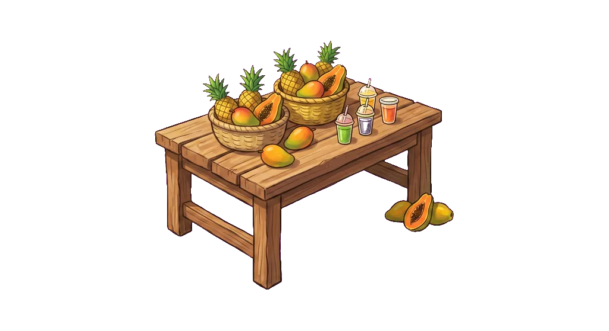

診断結果 ／ サンプル12週 ／ 架空の例
職人型×プレイヤー型
価格
+38
攻め
-52
品質
+81
仕組み
-74
規律
+11
「12週のうち11週で、商品を磨く手を選びました。相場より12%高い値段を、一度も下げていません。」説明用サンプル。実在の診断結果ではありません。
JUNGLE BIZ ／ 経営診断
40分ほど、架空の商売を経営してもらいます。 値段を決め、広告を打つか決め、人を雇うか決める。 その実際に下した意思決定から、あなたの経営の癖を出します。 質問には一問も答えません。
インストール不要 ／ アカウント登録なし ／ スマホ・PC対応
何が違うのか
性格診断や適性検査は、本人に質問します。返ってくるのは本人が自分をどう思っているかです。 慎重だと思っている人は慎重だと答えます。実際に慎重かどうかは分かりません。
従来の適性検査
「あなたは値下げに慎重なほうですか？」
答えたとおりの人物像が返る。本人の自己認識と、実際の判断がずれていても検出できない。
JUNGLE BIZ
売れない週が来た。さあ、どうする。
実際に値下げしたかどうかを記録する。答えではなく、選んだ手が残る。
経営に必要なのは自己認識ではなく判断。
だから判断そのものを見る設計にした。
やること
診断のための答えを選ばせません。 ジャングルで小さな商売を始め、毎週の意思決定がそのまま記録されます。
インストール不要。スマホ・PC・タブレット対応。アカウント登録もありません。
値段、仕込み量、広告、接客、採用、仕組み化。毎週いくつか決めていくだけ。目安40〜50分。
経営スタイル・いまの課題・次の一歩。すべて、あなたが実際に選んだ手を根拠にして出ます。
PLAY FIRST
飲食・物販・サービスなど、業種の感覚に近い商売を選べます。 判断の癖は業種を越えて出るので、どれを選んでも診断は成立します。

出力サンプル
5つの軸で位置を出し、そこから経営スタイルを判定します。 軸は±どちらが良いというものではありません。どちらに寄っているかを示すだけです。
「第7週、売れなかった原因は『知られていないこと』でした。翌週あなたが選んだのは、値下げです。」
意思決定と結果が対で記録されている職人型×プレイヤー型
いまの課題
12週間、人を雇わず、仕組みも作りませんでした。品質は最後まで落ちていません。 ただし第8週に「手が足りない」状態になってから、3週続けて自分の作業時間を増やす手を選んでいます。
※ 上記は説明用のサンプルです。数値と文面は例示のために作成しています。
なぜ言い切れるのか
このゲームは毎週、「いま何が詰まっているか」を内部で判定しています。 集客なのか、成約なのか、利益率なのか、現金なのか、あなた自身の時間なのか。 詰まりが出た翌週にあなたが何を選んだかが残ります。
これは性格の話ではない。起きた事実です。 当たっているかどうかを議論する余地がない。ここが、この診断のいちばん強いところです。
12のタイプ
5つの軸から8タイプ。どこにも尖っていない場合が1タイプ。 そして軸では見えない3つの型があります。
価値提示型
高く売る覚悟がある。値段で戦わない。
価格 ＋
値引き逃避型
迷うと値段を下げる。判断を価格に肩代わりさせている。
価格 −
突撃型
まず外に出る。知られなければ始まらないと考えている。
攻め ＋
職人型
質に全部を注ぐ。中身が良ければ伝わると信じている。
品質 ＋
回転型
量とスピードで取る。完成度より、まず数を回す。
品質 −
設計型
人と仕組みに渡す。自分がいなくても回る形を先に作る。
仕組み ＋
プレイヤー型
自分が現場に立ち続ける。手を離すのが最後になる。
仕組み −
戦略型
詰まりを見てから手を変える。動く前に原因を取りにいく。
規律 ＋
バランス型
どこにも大きく振れていない。穴がない代わりに武器もまだない。
全軸が中央
温存型
動かない。減ってはいないが、増えてもいない。
パターン ／ 振れ幅がゼロ
迷走型
定まらない。手が毎週変わり、店の輪郭がぼやける。
パターン ／ 振れ幅が大きい
息切れ型
続かない。前半にやったことを、後半でやめてしまう。
パターン ／ 前半と後半が違う
下段の3つは、平均値では見えない型です。5つの軸は「どこに立っているか」を測りますが、 この3つは「どう動いたか」を測ります。経営の失敗はたいてい、動かない・定まらない・続かないのどれかです。
組織で使う
個人の診断より、経営者にとって価値があるのはこちらです。 全員分を集計すると、その会社が何を得意とし、何を全員そろって落としているかが出ます。
| 出るもの | 読み取れること |
|---|---|
| タイプの分布 | 「うちは突撃型ばかりで、設計型が一人もいない」 |
| 全員に共通する弱点 | 「全員、仕組み化の判断が遅い」 |
| 資金が尽きた人の割合 | 「借入の判断ができる人が2割しかいない」 |
| 個人別レポート | 面談・配置・育成の材料。本人にも返せます |
| 前回との比較 | 研修や登用の前後で、判断が変わったかどうか |
経営者に効くのは平均値ではなく偏りです。 「うちの幹部は全員このタイプだ」と出た瞬間に、話が自分ごとになります。
よくある質問
操作の速さや反射神経は一切関係ありません。毎週いくつか選ぶだけで、時間制限もありません。測っているのは上手さではなく、選び方の偏りです。
そこは重視して作っています。12種類の戦略パターンを機械で何百回も走らせ、同じ戦略なら同じタイプが出るかを毎回測りながら調整しています。ぶれる軸は出さない方針です。
これは優劣をつける道具ではありません。軸に良い側・悪い側はなく、職人型が設計型より優れているということもありません。人事評価そのものに直結させることは想定していません。
毎週の意思決定（値段・仕込み・広告・選んだ行動）と、その結果です。個人を特定する情報は、法人としてお使いいただく場合に、企業側と本人へ用途を明示したうえでのみ結びつけます。個人でお試しの場合は、既定で記録は共有されません。
判断の癖は業種を越えます。値段を下げて逃げるか、人に任せられるか、詰まりを見てから動くか。どの商売でも同じことを問われます。業種に合わせた専用版の制作も可能です。
START WITH YOURSELF
当たっているかどうかは、読めばすぐ分かります。 そのうえで「これを幹部にやらせたらどうなるか」を考えていただくのが、いちばん早いと思います。
無料ではじめる